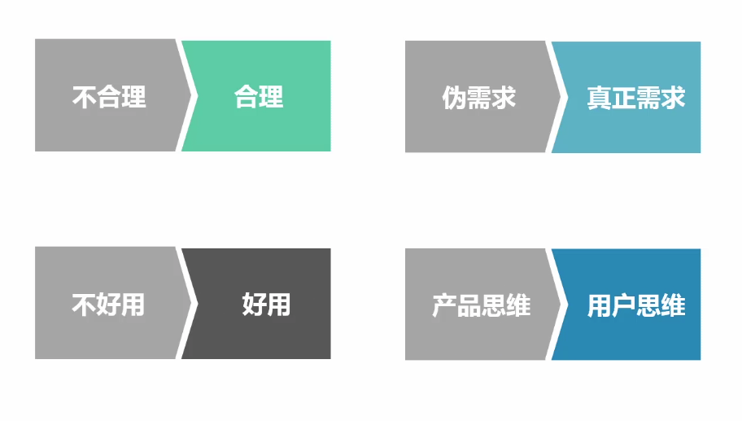
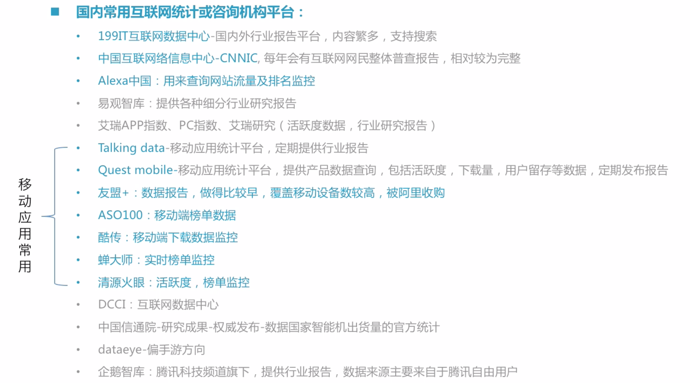
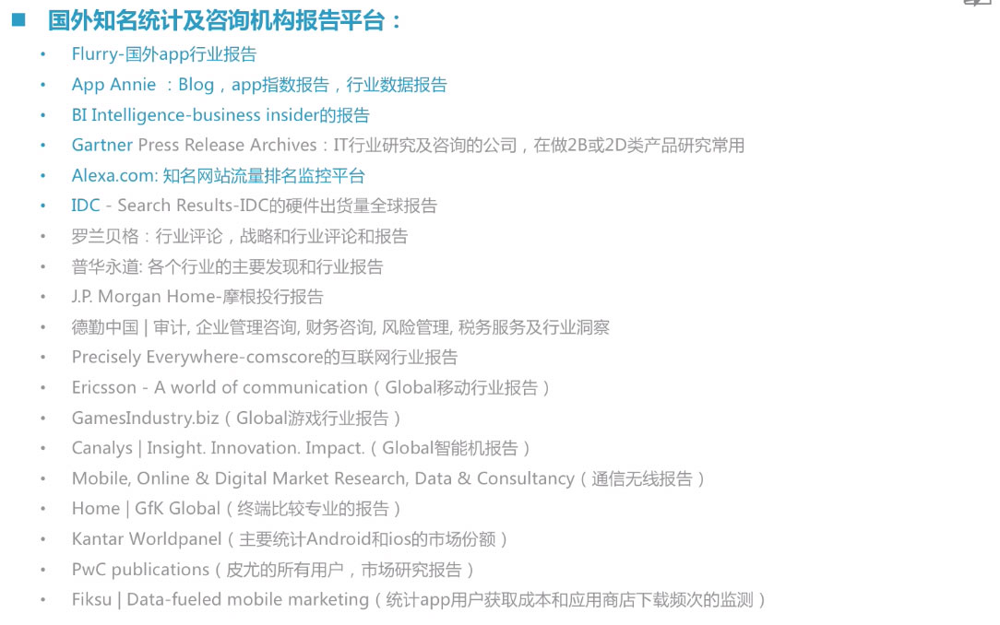

用户研究概述
一、认识用户研究
A.认识用户研究
1.用户研究是对用户目标、需求和能力的系统研究，用于指导设计、产品结构或者工具的优化，提升用户工作和生活体验

2.常用方法

3.与市场研究的共同点和差异
- 1）市场研究也叫作“市场调查”、“营销研究”、“市场调研”为实现信息目的而进行研究的过程，包括将相应问题所需的信息具体化、设计信息收集的方法、管理并实施数据收集过程、分析研究结果、得出结论并确定其含义等
- 2）关系

B.用户研究的重要性
1.UCD：以用户为中心而设计（用户所想，用户所用，用户所悟）
2.诺曼的三层定理
- 1）本能：用户想要什么样的感觉（用户需求）
- 2）行为：用户想要做什么（行为背后的动机）
- 3）反思：用户还想要什么样

二、互联网产品研发中的用户研究
A.互联网产品研发中的用户研究（上）
1.产品研发流程
- 1）制定策略
- 特征：对该细分市场不够了解，不知在该细分市场是否还有机会空间；对该细分市场的人群不够了解，不知具体该切入什么群体；不知初步想法是否靠谱
- “不确定性的存在是因为缺乏信息，缺乏信息是因为你对所服务的市场知之甚少，而所有这些不确定性，最终都会转化为风险，风险会转化为成本，导致整个产品彻底失败。因此，在开发任何产品之前，你需要进行严格的假设和调研，找到刚需，找到痛点”-周鸿祎
- 用户研究要解决的问题：前期对这些不确定性进行充分的用户研究，可减少产品失败的风险


- 2）研发中
- 特征：正在设计过程中，细节需要完善，需要确定视觉风格；产品设计是否符合目标用户的使用习惯，需要进行验证；产品对目标用户是否有吸引力，需要进行验证

- 在研发阶段，对多个版本进行可用性测试，优化产品设计

- 3）上线后
- 特征：不确定用户是否满意；不确定用户喜爱及忠诚的原因是否与预期相同；产品设计存在问题，需要进行优化

- 产品上线后，进行满意度调查

2.谁来做用户研究？
- 1）小团队：产品经理或交互设计；与其他产品共用用户研究资源
- 2）大型团队：独立的用户研究人员或团队
B.互联网产品研发中的用户研究（下）
1.研究流程

2.确定研究内容
- 1）其他职能发起需求
- 2）用户研究人员发起需求
3.确定研究方法
- 1）问卷调查：以问题的形式系统地记载调查内容
- 2）深度访谈：一种直接的、一对一的访问形式
- 3）数据分析：用统计分析方法对收集来的大量数据进行分析
4.做好研究准备

- 注意是合作，而不是挑刺、敌对
- 通过干系人访谈获取足够的信息
- 找到汇报对象，找到能解决问题的人
- 真正的【解决问题】，而不是只【提出问题】
5.着手研究
- 研究执行：采集数据
- 数据处理：将前面通过各种用户研究方法采集的数据进行处理分析
- 组织逻辑撰写研究结论
6.应用研究结果
- 小范围非正式：比较适合敏捷可用性测试的快速研究
- 集中正式：适用大型的，用户研究人员主导，其他主要职能全程参与观察及讨论，最终结论再集中对大家进行分享
- 建立问题的记录和跟进措施
- 找对人，重要问题和指定负责人当面确认
- 一定要搞清楚你的参会人员，不要谁提需求就只通知谁！你要知道这个问题是谁负责，就必须要通知到对方
- 不只是会议，研究过程，也要叫上相关的人员
三、网易的用户研究体系
A.网易用研体系
1.“我觉得在企业的一个使命过程里面，最核心的是通过探索和创新，为消费者创造出新的产品，乃至这个产品新版本不停地迭代和更新”-丁磊
2.网易用户研究团队


3.网易用户研究员能力体系

B.用户研究专业知识体系及优势

C.用户研究员的成长路径
1.个人思维层面：在关注用户研究的同时对业务目标和商业目标进行探索
2.部门层面：从被动到主动的过程
3.时代发展层面：对数据分析能力的要求变高
四、用户研究攻略
A.如何面试用户研究岗位
B.用户研究的误区

用户研究方法论
一、用户研究方法概述
A.方法总览

二、定性研究方法概述
1.定性研究定义：由访问、观察、安全研究等多种方法组成，原始资料包括场地笔记、访谈记录、对话、照片、那间或备忘录等等，目的在于描述、解释事物、事件、现象、人物并更好地理解所研究问题的研究
2.定性研究是一种探索性研究，它通过特殊的技术获得人们想法、感受等方面的较深层反应的信息，主要用于了解目标人群有关态度、信念、动机、行为等有关问题
3.定性研究与定量研究的区别
- 定量研究，将数据定量表示，并通过统计分析，将结果从样本推广到所研究的总体
- 定性研究，主要采用非概率抽样方法，根据某一研究目的，寻找具有某种特征的小样本人群进行调查。常常用于制定假设或是确定研究中应包括的变量，对潜在的理由和动机求得一个定性的理解

- 定性研究，可以指明事物发展的方向及其趋势，但却不能表明事物发展的广度和深度；可以得到有关新事物的概念，但却无法得到事物的规模的量的认识
- 定量研究，恰好弥补了定性分析这一缺陷，它可以深入细致地研究事物内部的构成比例，研究事物规模大小，以及水平的高低
4.定性研究和定量研究的关联

5.没有正确的定性研究，就不可能作出科学合理的描述，更不能建立起正确的理论假设，定量研究也就因此推动了理论指导。没有理论指导的定量研究，就不可能得出科学而具有指导意义的调查结论
6.在调查过程中应根据事物的性质及调查研究的目的分别选用定性研究或定量研究，或者两者混合使用，决不可偏废
7.定性研究的应用
- 1）是产生新想法的工具：定性研究可以通过对目标人群的观察和倾听以获取第一手资料，给研究者提供产生新想法的信息。通过定性研究，研究者可以了解自己不知道或不了解的有关目标人群的语言和行为范围，了解目标人群在受到语言或非语言的刺激后产生的想法和反应，为更好地交流提供信息
- 2）是定量研究的先前步骤：定性研究可以探讨人们行为、情感、思想等领域里的一系列问题，了解这些问题的变化范围，为定量研究的问卷设计提供必要的信息，同时也是进行定量研究前的必要步骤
- 3）可以帮助理解和解释定量研究的结果，使研究者对所研究的问题有较为客观、全面的解释
- 4）是收集原始资料的一种方法：通过开放式问题或访谈提纲的形式来收集资料，所收集的资料较为全面，可以客观、准确地反映被研究者的情感、思想、行为等方面的问题，是一种较好的、有时甚至是唯一可以应用的收集资料的方法
三、定性研究方法的操作
A.访谈法
1.访谈法是运用有目的、有计划、有方向的口头交谈方式向被调查者了解社会事实的方法。它是一种研究性交流，是通过谈话双方的口头交流，对有意识要获得的资料的收集和梳理
2.访谈和谈话的区别

3.访谈法的使用场景
- 1）复杂的话题，例如：对经历和过程仔细探究，采集被访者的观点、情感、感情等
- 2）复杂行为的剖析，例如：用户如何理解App首页各个模块之间的关系
- 3）敏感性或私密性话题，使用一对一访谈法可鼓励被访者愿意谈论
- 4）面向专业人士，收集特权信息，这类信息只有站在某个位置的人才能提供，通过其他方式无法覆盖到这类人群，比如竞争对手访谈
- 5）访谈的类型


4.深度访谈
- 1）是定性研究中经常采用的资料收集方法之一，主要是利用访谈者与受访者之间的口语交谈，达到意见的交换与建构，是一种单独的、个人的互动方式，受访者藉由访谈的过程与内容，发觉、分析出受访者的动机、信念、态度、做法与看法等。此研究方法是一种访谈者与受访者双方面对面的社会互动过程，访问资料正是社会互动的产物
- 2）研究步骤
- a）确定研究目的：搞清楚目的，就成功了一半
- b）编写研究方案：完整研究方案包含（研究内容；研究人员；研究方法；用户招募：受访者配比，招募途径，酬劳预算；时间计划）
- c）招募用户
- 招募渠道

- 酬劳预算

- d）编写访谈提纲：确定完访谈目的时，招募用户和撰写访谈提纲可以同步进行，提纲的类型可分为两种（开场语，研究目的，活动流程，自我介绍、暖场部分、正式访谈内容、结束语）

- e）做好研究准备
- 适合的访谈环境
- 熟悉访谈内容及访谈提纲
- 熟悉受访者的背景信息
- 准备好访谈所需的素材
- f）访谈执行
- 开场语->暖场问题->正式访谈->补充问题->结束->回顾
- 3）访谈技巧
- a）提问时，关注“如何”
- 用户思考，探究用户如何思考，而不是研究他们说了什么
- 行为经历，关注用户以往的行为经历，而不是用户以后的选择或如果的操作
- 关注用户以往的行为经历，而不是用户以后的选择或如果的操作
- b）问有关操作的问题以得出更准确的数据
- 详细的描绘
- 真实的事件行为
- 具体的行动
- 面试与访谈的关系，含糊的答案对我们来说并没有价值，也无法确认其真实性
- c）避免错误的询问
- 避免措辞含糊，措辞清晰，没有歧义
- 避免一个问题中包含多个小问题
- 避免措辞复杂（如，不要使用双重否定）
- 不要使用专业术语，使用用户能够理解的概念和词汇
- 避免引导性问题，保持中立
- 避免询问超出受访者能力范围的问题
- d）合理安排问题的次序：由简到难、由轻松到沉重、由普通到敏感
- e）其他访谈技巧
- 注意倾听
- 熟读访谈提纲，但要懂得变通
- 鼓励用户说，但不随便表示赞同
- 不能确定的信息，及时向受访者确认清楚
- 给受访者时间去思考
- 保持中立，避免流露出失望或责备情绪
5.焦点小组
- a）由一个小组的人组成，他们在主持人（研究者）的指引下探索他们关于某个特定主题的态度和观念、感觉和观点
- b）优势：
- 可以从每次会谈中收集更多人的数据，方便、经济
- 用户之间可以产生有价值的讨论和互动
- 可以检验某个问题，在某个人群在多大程度上可以达成共识
- 可以检验某个特定主题或经历是否会在小组中引起不同的或者相反的观点
- c）与一对一访谈区别：
- 容量不同
- 取样不同：根据与研究上的相关的个人态度来选择，相反观点，相似性
- 谈论话题形式的不同：分享他们的经历和看法，同时把自己的观点与他们的观点进行比较。这个分享和比较的过程特别有助于研究者倾听和理解关于某一主题的不同回应。因此，最好的焦点小组不仅要提供关于参与者持有什么不同观点的数据，还要提供关于他们为什么有这种观点的数据
- 主持人作用的不同

6.其他应用及资料分析
- a）其他应用
- 1）现场拦访：指选定适合的地点，拦截符合条件的目标用户进行现场访谈的一种方法，也常被用于问卷调查
- 2）通过传统的招募方式，很难接触到的某类人群，如蓝领、幼儿园家长、潮人、社区老年群体等
- 3）现场拦访成功率：
- 选择合适的地点
- 选择合适的时间
- 出示身份证明：简短快速的说明目的
- 说明所需时长，控制访谈内容，时长控制在5-10分钟
- 说明需要了解的内容，必要时可将访谈提纲打印出来，先给对方过目
- 诚恳，不纠缠
- 4）现场拦访的To Do List

- 5）电话访谈：以电话的形式进行的一种访谈方式
- 6）合适电话访谈：
- 问卷信息的确认和追问
- 用户反馈信息的确认和追问
- 简短的调查
- 条件受限，不能面对面访谈时
- 7）保证电话访谈的成功率：
- 选择提前邀约，按照确定好的名单进行访谈
- 控制访谈内容，保证在10分钟左右 ，如果提供较高的酬劳，也可将访谈时间提升至30-40分钟
- 8）电话访谈的To Do List

- 9）在线访谈：通过IM工具、邮件形式等进行在线的访谈，可以是一对一，也可以是多人形式的访谈
- 10）进行在线访谈的场景：
- 他人主动通过IM或邮件等反馈问题时
- 想要快速的采集灵感时
- 为了保持社群的活跃度
- 11）在线访谈优势：
- 低成本，节省时间及金钱
- 避免在某些话题上产生的尴尬
- 相比于面谈，被访者有更多的时间来反应和思考
- 12）在线访谈的问题
- 不能通过非语言交流去理解和判断对方的行为
- 访谈者与受访者之间存在时间差
- 无法向对方演示或展示某些信息来辅助谈话
- b）访谈中安全性情况的处理
- 1）受访者爽约

- 2）临时增加人数

- 3）受访者不合作

- 4）被访者过于紧张

- c）资料的整理、分析
- 1）资料处理
- 检查、补充：重听录音，确认记录信息的准确性；补充漏记信息；时间允许的情况下，每天访谈结束后，完成对当日访谈资料的检查和补充；整理录音是非常耗时的工作
- 完善、分析：

- 2）研究结论的撰写

- 3）定性研究是把观察到的、被报告的和记录下来的信息，经过归纳、总结、分析，转化成书面方案，而不是数字
- 4）定性研究可直接摘录访谈记录中受访用户的言论，使用“深度描写”来呈现，以方便阅读者理解
7.访谈法的优点：

8.访谈法的缺点：

B.观察法
1.观察法：是指研究者根据一定的研究目的、研究提纲或观察表，用自己的感官和辅助工具去直接观察被研究对象，从而获得资料的一种方法
2.观察法的分类：
- 1）流程结构化：
- 控制观察：根据观察目的预先规定观察范围，并在实施观察时，对观察手段、观察技术、观察程序和记录方式标准化
- 无控制观察：对观察项目、程序等不做严格规定，记录也可采取随意的方式，通常用于探索性或有一定深度的专题调查
- 2）参与程度
- 完全参与观察：观察者较长时期地生活在被观察者之中，甚至改变自己原有的身份
- 不完全参与观察：观察者不改变身份，只在调查时置身于调查事项中取得数据
- 非参与观察：观察者不参与调查活动之中，而是以局外人的身份去观察事项发生和发展情况
- 3）观察介质
- 人员观察：由调查人员实地观察受访对象以了解情况的一种常用形式
- 机器观察：通过机器观察受访对象。运用这些设备可以连续地记录发生的行为
- 实际痕迹观察：调查者不直接观察受访对象的行为，而是通过一定的途径来了解他们行为的痕迹
3.人的干预会影响用户完成任务时，同样需要观察
4.观察法步骤：
- 1）确定观察目标及假设：需求方通过邮件或者内部沟通软件主动找用研来提调研需求，用研根据初步需求，找需求方当面具体沟通：获取需求；需求沟通；研究研究的目的、目标及假设
- 需求沟通非常重要
- 需求方不会点名观察法：整理归纳
- 最好有明确的假设：需求细化
- 需求沟通不是聊天 ：带着明确的目的
- 2）确定观察计划：根据确定的研究目的来制定具体的调研计划。为了达到我们的调研目的，我们需要选择具体的方法（往往在这个时候才能真正确定需要用观察的方法）；确定了需要观察之后，需要设计整个观察的流程脚本
- a）何时用观察法
- 可用性测试中加入观察
- 访谈中加入观察
- 纯粹观察法
- b）如何制定具体的观察脚本
- 用户招募条件及数量：决定需要观察什么条件的用户
- 观察的关注点：即观察的核心目标，希望通过观察去验证哪些假设
- 观察清单：主要包括整个观察流程的总览以及各种在观察中需要用到的设备清单
- 流程概要：主要是向用户介绍整个观察流程，并强调注意事项
- 观察流程：核心部分，将整个观察流程分成各个环节，每个环节是什么任务，如何引导用户以及记录哪些观察中的细节等
- 结束部分：对用户表示感谢，并给予礼金并签字
- c）注意事项
- 非结构更强一些：不心太过结构化，主要强调需要着重观察记录的行为事件
- 最好有个量化记录的表格：对观察要点进行整理，并做成方便记录次数、出现时间的表格
- 确保现场记录的方案：观察法非常依赖现场的记录和后续针对当时情景的整理
- 制定方案要考虑实现成本：尤其是纯粹的观察法，时间人力成本较高，在制定方案时可以灵活思考，采用性价比更高的观察方式
- 3）具体实施观察：根据实施的观察计划，一步步来准备并实施的过程：招募用户；准备现场设备及资料；将过程信息同步给需求方；正式实施观察
- a）注意事项
- 鼓励出声思考：鼓励用户前后的想法说出来
- 尽量营造真实场景：通过指导语介绍来尽量构造一个真实场景
- 避免主观偏见对记录影响：尽量不带有立场预设去进行观察
- 记录术是一个技术活：提升记录速度和效率。好的记录表格胜过快手；特殊符号速记；注意非语言行为的记录；现场资料的记录保存
- 4）观察结果的分析及呈现
- 观察中发现的产品问题：发现用户在使用中迟疑、错误、停顿等情况，这些现象或者行为背后都可能是产品设计出现问题或者存在优化空间。需要用研对各个问题进行整理，并挖掘背后真正原因，提出产品优化的建议
- 观察中记录的目标事件行为：对项目关注的目标行为进行记录。这些行为记录背后都应该有一个具体假设，然后根据最终的记录结果来判断假设是否成立，后续产品措施是什么
C.情绪版
1.情绪板是一个由图片、文本、实物样本等组合而成的拼贴画
2.使用情绪板的三个目的：
- 1）对产品的特质进行定义：也是一个理清产品思路的过程，可以逐步统一内部对产品的定位
- 2）设计师、团队成员、用户共同参与视觉设计，促进团队共识：让团队内对视觉设计目标有一个共识
- 3）进行视觉分析质感等为视觉设计提供依据：将主观的设计变得更加客观更改，有迹可循
3.“各个感觉器官产生的感觉和人的心理活动是相互影响的”

4.情绪板就是首先确定激发情绪的目标，然后再去确定视觉设计思路：
- 1）确定原生关键词：3-4个关键词，头脑风暴，访谈技巧和主持功底，基本素材的积淀
- 2）确定衍生关键词
- 3）图片收集：根据衍生关键词选择图片，模糊化处理，只保留颜色信息
- 4）用户创建
- 视觉映射
- 心境映射
- 物化映射
- 5）情绪板分析
- 颜色分析：通过模糊图片提取
- 视觉风格分析：原始图片和用户对关键词的视觉映射、心境映射来获取
- 质感分析：原始图片的纹理
- 参与视觉规范的制定
D.卡片分类
1.简单来说，就是让用户用卡片来对信息进行分类的一种研究方法。通过卡片分类法，可以快速、低成本的梳理产品逻辑结构，帮助我们了解用户如何理解和组织信息，从而帮助我们设计出更符合用户需求的信息架构
2.特别适合在设计产品的整体信息架构，导航、菜单时使用
3.卡片分类的优点：
- 简单易操作、成本较低
- 有效的帮助理解用户真正需要的信息分组方式
- 可以找出用户查找信息中的关键维度
- 可以识别出用户难以理解的概念
4.卡片分类的类型：开放式（灵活，产品初期）、封装式（适用于快速验证）；小组式、个人；手工、软件/在线；
5.卡片分类准备
- 1）确定研究目的：提升用户内容发现及查找效率
- 2）前期数据收集：前期问卷，访谈，测试，用户反馈数据，分类需细化、分类不合理、类目下排列杂乱、导航呈现、筛选条件作用小
- 3）研究准备：制作卡片、用户招募
- 卡片内容选择应有代表性，覆盖研究对象的整体内容，和研究对象各方面的信息分布相符，考虑未来发展性
- 数量不宜过多或过少，建议在30-100间
- 文字编写要尽量的减少歧义
- 选择参与者能够理解的内容，写上简短的解释
- 进行分类的内容在同一层级上，避免包含关系
- 确定是对内容分类还是对功能分类，不要两者混
6.卡片分类基本过程：
- 活动介绍
- 分发卡片和材料
- 参与者对卡片进行分类
- 参与者为卡片组写上标签
- 分类结束后续访谈
- 记录和整理结果
7.注意事项：
- 提前预想一些可能出现的情况如何处理
- 鼓励用户进行出声思考
- 准备多余的空白卡片
- 进行有效追问，有助于更深入的理解用户的思考方式
- 每次分类前注意将卡片随机打乱，避免受到他人分类干扰
8.卡片数据记录


9.结果分析
- 1）深入观察数据，将用户分类结果反复浏览，对比，总结用户分类的一般规律
- 2）当样本量足够多时，也可以进行统计分析：除了比例计算外，还可以借助聚类分析方法，如K均值聚类分析、层次聚类等
四、定量研究方法概述
1.定量研究
- 又称为量化研究，是社会科学领域的一种基本研究范式，是科学发展的重要基础
- 指研究事物某方面量的规律性，将问题与现象用数量来表示，进而去分析、检验、解释，最后获得结论的研究方法和过程
- 定量研究侧重事物量的分析，它以概率论和统计学为基础，通常回答“有多少”的问题
2.为什么要做定量研究：精确、科学的结论
3.日常工作场景

4.定量研究类型


5.常见定量研究方法

五、定量研究方法的操作
A.问卷调查法
1.问卷调查法
- 是调查者运用统一设计的问卷向被选取的调查对象了解情况或征询意见的调查方法
- 研究者将所要研究的问题编制成问题表格，让受访对象以邮寄、当面作答、在线作答，或者追踪访问方式填写，从而了解用户对某一现象或问题的看法和意见
- 问卷调查可以用于产品研发周期的任何一阶段
2.优缺点：

3.什么时候适合使用：
- 需要进行定量分析的调研
- 需要匿名进行调研的问题
- 对已有假设进行检验
- 寻找问题隐藏的关联
- 对产品设计用户认知及态度的评估
4.不适用于：
- 发现和描述具体问题
- 探索受访对象模糊的态度
- 获取创新的想法
- 获得精确的行为数据
5.不同调查方式及特点


6.在线问卷调查

7.定点拦截访问（CLT）

8.流动街访

9.CATI电话访问

10.问卷调查的基本流程

11.需求沟通
- 问题现状
- 调研目的
- 初步假设
- 决策处境
- 行动计划
- 效果预期
- 其它可利用资源、已有信息、成本预算等
12.研究设计（研究方案）
- 调研对象：要明确总体和样本之间的关系
- 抽样设计：


- 调研框架：


- 投放方式：


- 调研假设
- 回收预期
- 时间预期
- 调研预算
13.问卷设计
- 1）大致结构

- 2）设计问卷时考虑问题之间潜在的关系：预先先想好回收回来如何做分析，例如是不是要做因子分析，哪两个是上之间要做交叉分析等等
- 3）题型选择


- 4）题干设计原则

- 5）答案设计原则

- 6）题目顺序

- 7）题目数量

14.问卷测试
- 1）多找几个人一起试填，检查题项表述用户是否理解，是否有歧义，逻辑是否通；如有可能让目标用户进行试填
- 2）检查问卷跳转是否正常，在不同浏览器中能否正常显示
- 3）数据回收是否正常，避免回收出现问题
15.问卷回收数据分析
- 1）数据清洗

- 2）编码整理

- 3）统计分析

- 4）得出结论
B.流量\日志数据分析
1.通过在网站或应用中进行数据进点，进而获取用户对产品的访问，下载，注册，使用，留在，转化等行为数据，服务于产品体验设计，业务目标达成来进行的分析
2.可以分析哪些数据？

3.数据分析流程

4.用研可以做哪些分析？

5.多种数据结合更容易深入分析

6.合作研究流程

7.Web分析复合指标：：PV、UV、UPV、访问、跑出率、退出率、访问时长、访问深度（PV/UV）、转化率
8.识别用户的方式：IP、IP+Uesr Agent、cookie、User ID、设备ID、其它
9.移动分析基础指标：新增设备、累计设备、启动次数、单次使用时长
10.基础用户指标：新增用户（DNU、WNU、MNU）、活跃用户（DAU、WAU、MAU、DAU\MAU）、留存率：次日、7天、14天、30天，流失率、回访率、一次性用户、用户生命周期
11.在使用数据报告，或者统计平台时，一定要先了解清楚各个指标来源和定义，不同平台可能会有差异
12.常见分析内容


13.常见分析问题：用户从哪里来？

14.常见问题，都是什么样的用户？

15.常见问题：用户如何使用

16.用户转化路径分析


C.实验研究法
1.实验法是通过人为的，系统的操作影响因素，在高度控制的条件下，检验两现象之间是否存在着一定因果联系的科学研究方法
2.可能接触到一些实验：眼动实验、A\B Test、实地实验、脑电实验、内隐态度实验、情绪识别实验
3.实验研究的基本要素：
- 1）实验假设：待验证的问题和推论，实验研究能够研究因果关系
- 2）实验变量：必须是明确的，客观的，自变量必须能够被很好的操作，因变量必须能被客观的测量
- 3）实验控制：消除额外变量和控制实验误差，以取得较为准确的结果
4.实验设计要点
- 1）自变量的操纵：例如待验证的方案版本，方案中的元素，功能
- 有或无
- 数量或程度
- 类型
- 2）因变量的测量：商业目标相关、用户体验相关
- 3）无关变量的控制

5.实验设计方法

6.A\B Test：前提是有比较多的用户量


7.A\B Test怎么做
- 1）确定研究目标
- 2）方案设计
- 3）创建比较版本
- 4）分类测试
- 5）数据分析
8.眼动实验案例


D.其它定量数据获取方式
1.常用数据采集工具
- 1）八爪鱼

- 2）适用场景

- 3）注意事项

2.常用二手数据
- 1）特点

- 2）常用数据来源


3）二手数据注意事项
- 不同平台、不同机构，有其擅长的领域
- 数据取样方式
- 数据样本量
- 统计指标具体定义
- 数据是否经过二次加工
- 警惕“三无报告”
- 掌握数据的相关专业知识，分析框架